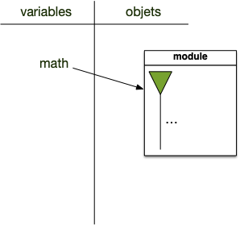
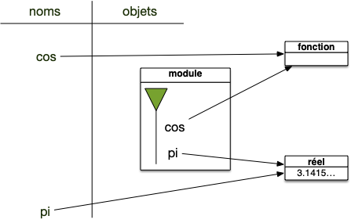
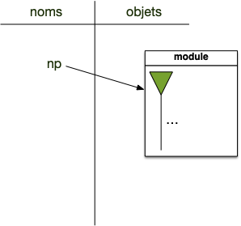

Modules
Un module (aussi appelé bibliothèque ou library) est un ensemble de fonctions utiles, utilisables dans de nombreux programmes. Python vient avec de nombreux modules, par exemple :
- math qui contient les fonctions mathématiques courantes,
- random qui permet de générer toutes sortes de nombres aléatoires,
- pathlib pour naviguer dans l'arborescence du disque dur,
- ...
Il existe de nombreux modules, réalisant une foultitude d'opérations. Avant de se mettre à coder quelque chose, commencez toujours par vérifier (google est votre ami) s'il n'existe pas un module tout fait, vous gagnerez du temps. Python en fournit déjà de nombreux via sa bibliothèque standard.
Utiliser un module
Pour utiliser un module, il faut commencer par l'importer avec la commande import. Il existe plusieurs façon de faire, mais toutes fonctionnent sur le même principe : python va lire le module et associer les noms qu'il trouve à un espace de nom. Le mot clé utilisé est import <nom de module> ou une de ses variations.
Nous allons ici calculer le cos de $\pi/2$. Pour cela commençons par utiliser la méthode explicite qui va nous permettre de montrer le fonctionnement interne de l'utilisation des modules.
Importation directe du module
On met le nom complet avant chaque appel :
>>> import math
>>> pi_sur_deux = math.pi / 2
>>> math.cos(pi_sur_deux)
6.123233995736766e-17
>>>Regardons ligne à ligne comment se comporte l'interpréteur avec les variables :
Import
La première ligne du code précédent crée une variable de nom math et de type module.
>>> import math
>>> type(math)
<class 'module'>
>>>Un module contient un objet python appelé espace de nommage et qui permet d'associer des noms à des objets. Représentons ceci graphiquement :

L'espace de nommage (la flèche verte) contient tous les noms définis dans le module math (symbolisés par les ...), en particulier les noms pi et cos, eux-même liées à des objets. Explicitons-le :

Pour accéder aux objets d'un espace de nommage, on utilise la notation pointée :
Définition
La notation A.B : se lit ainsi on cherche l'objet de nom B dans l'espace de nommage de l'objet de nom A
À l'issue de la seconde ligne on est dans l'état suivant :

La dernière ligne est alors exécutée de la même manière.
Importation d'une méthode particulière
On peut aussi importer le module, mais ne pas retenir son nom :
>>> from math import cos, pi
>>>Après la ligne de l'import on est dans la situation suivante :

Le module est importé mais est inaccessible, seules les noms de l'import le sont. Le ramasse-miette supprime ensuite les objets inaccessible, ici le module. Donc Au final on a :

Ce qui nous permet ensuite d'écrire :
>>> cos(pi / 2)
6.123233995736766e-17Dans cette façon de faire, on associe des noms du module math à l'espace de nom global. Il n'y a aucune manière d'accéder aux autres noms défini dans math avec cette façon de faire.
Importation de toutes les fonctions du modules
Une généralisation du cas précédent permet de tout importer :
>>> from math import *
>>> log(e)
1.0Cette méthode est déconseillée dans la plupart des cas car on ne sait pas vraiment ce qui a été importé. Ce qui nuit à la lisibilité du code.
Importation de modules sous la forme d'alias
Quelques bibliothèques très utilisées s'importent avec des alias par exemple :
>>> import numpy as np
Ou encore :
>>> import matplotlib.pyplot as pltNotez que dans ce dernier cas, ceci signifie que pyplot était aussi un module !

Cela permet de raccourcir le nom, il suffira de taper plt à la place de matplotlib.pyplot mais cela se fait au détriment de la lisibilité. Il n'est donc pas recommandé du tout de le faire avec d'autres bibliothèque même s'il est tout à fait possible d'écrire ce genre d'horreurs :
import math as m
import random as rExercices avec le module random
Un module très utile dans python est le module random
Utilisez le pour répondre aux questions suivantes :
Générez un entier aléatoire entre 10 et 234.
solution
solution
On utilise la fonction randrange du module random :
>>> import random
>>> random.randrange(10, 235)
51Générez un nombre réel uniformément dans $[0, 1[$
solution
solution
On utilise la fonction random du module random :
>>> import random
>>> random.random()
0.07350177375024702Choisissez 2 éléments avec remise de la liste ["pomme", "abricot", "orange", "cerise"]
solution
solution
On utilise la fonction choices du module random :
>>> import random
>>> random.choices(["pomme", "abricot", "orange", "cerise"], k=2)
['pomme', 'pomme']Choisissez 2 éléments sans remise de la liste ["pomme", "abricot", "orange", "cerise"]
solution
solution
On utilise la fonction sample du module random :
>>> import random
>>> random.sample(["pomme", "abricot", "orange", "cerise"], k=2)
['cerise', 'pomme']